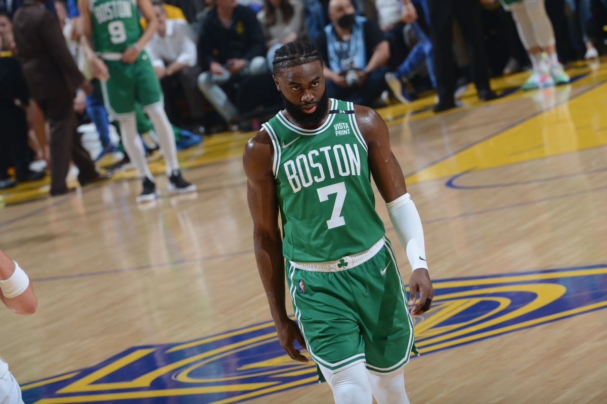

Biografía de Jaylen Brown
- Fecha de nacimiento: 24 de octubre de 1996
- Lugar de nacimiento: Marietta, Georgia, Estados Unidos
- Altura y peso: 1.98 metros, 101 kg
- Posición: Escolta / Alero
- Equipo actual: Boston Celtics (NBA)

Trayectoria Deportiva
Universidad de California, Berkeley
Jaylen Brown jugó una temporada con los California Golden Bears, donde:
- Promedió 14.6 puntos y 5.4 rebotes por partido.
- Fue nombrado Novato del Año de la Pac-12.
Carrera en la NBA
Fue elegido en el draft de 2016 por los Boston Celtics con la tercera selección. Desde entonces:
- Ha disputado seis finales de la Conferencia Este.
- Seleccionado tres veces al All-Star Game.
- MVP de las Finales en 2024 tras el 18.º título de los Celtics.
Logros Académicos y Personales
- Participó en clubes de ajedrez en secundaria.
- Estudió cursos de posgrado como estudiante de primer año en la universidad.
- Promueve la educación y rompe estereotipos de los atletas.
Compromiso Social
- Fundó Boston XChange para fomentar la innovación en comunidades desfavorecidas.
- Defensor de la justicia social y la igualdad educativa.
Familia y Vida Personal
Su padre, Quenton M. Brown, fue campeón mundial de boxeo (WBU). Jaylen combina el rendimiento deportivo con un alto compromiso social e intelectual, siendo un ejemplo tanto dentro como fuera de la cancha.